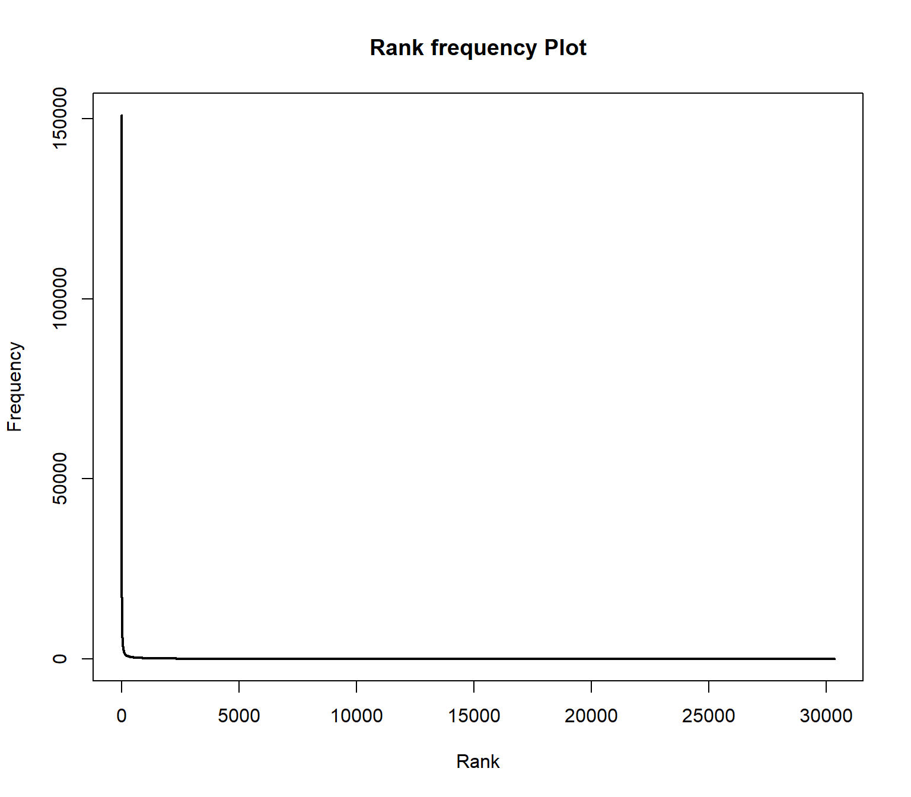

Tutorial 2: Processing of textual data
Andreas Niekler, Gregor Wiedemann
2020-10-08
In this tutorial, we demonstrate how to read text data in R, tokenize texts and create a document-term matrix.
- Reading various file formats with the
readtextpackage, - From text to a corpus,
- Create a document-term matrix and investigate Zipf’s law
First, let’s create a new R Project (File -> New Project -> Existing directory) in the provided tutorial folder. Then we create a new R File (File -> New File -> R script) and save it as “Tutorial_2.R”.
1 Reading txt, pdf, html, docx, …
In case you have already a collection of document files on your disk, you can import them into R in a very convenient way provided by the readtext package. The package depends on some other programs or libraries in your system, e.g. to provide extraction of text from Word- and PDF-documents.
Hence, some persons encountered hurdles to install the package due to missing libraries. In this case, carefully read error messages and install the missing libraries.
For demonstration purpose, we provide in data/documents a random selection of documents in various file formats. First, we request a list of files in the directory to extract text from.
data_files <- list.files(path = "data/documents", full.names = T, recursive = T)
# View first file paths
head(data_files, 3)## [1] "data/documents/bundestag/17_16_580-F_neu.pdf"
## [2] "data/documents/bundestag/prot_17_95.pdf"
## [3] "data/documents/bundestag/stellungnahme---buendnis-buergerenergie-e--v--data.pdf"The readtext function from the package with the same name, detects automatically file formats of the given files list and extracts the content into a data.frame. The parameter docvarsfrom allows you to set metadata variables by splitting path names. In our example, docvar3 contains a source type variable derived from the sub folder name.
require(readtext)
extracted_texts <- readtext(data_files, docvarsfrom = "filepaths", dvsep = "/")
# View first rows of the extracted texts
head(extracted_texts)
# View beginning of the second extracted text
cat(substr(extracted_texts$text[2] , 0, 300))Again, the extracted_texts can be written by write.csv2 to disk for later use.
write.csv2(extracted_texts, file = "data/text_extracts.csv", fileEncoding = "UTF-8")We choose CSV as a convenient text column based format for easy import and export in R and other programs. Also our example data for the rest of the tutorials is provided as CSV file. Windows users: Take care of setting UTF-8 file encoding explicitly when writing text data to the hard drive.
2 From text to a corpus object
Set global options at the beginning of each script! When working with textual data strings, it is recommended to turn R’s automatic conversion of strings into factors off.
# Global options
options(stringsAsFactors = FALSE)The read.csv command reads a CSV (Comma Separated Value) file from disk. Such files represent a table whose rows are represented by single lines in the files and columns are marked by a separator character within lines. Arguments of the command can be set to specify whether the CSV file contains a line with column names (header = TRUE or FALSE) and the character set.
We read a CSV containing 233 “State of the Union” addresses of the presidents of the United States. The texts are freely available from http://stateoftheunion.onetwothree.net.
Our CSV file has the format: "doc_id";"speech_type";"president";"date";"text". Text is encapsualted into quotes ("). Since sepration is marked by ; instead of ,, we need to specify the separator char.
# read csv into a data.frame
textdata <- read.csv("data/sotu.csv", header = TRUE, sep = ";", encoding = "UTF-8")The texts are now available in a data.frame together with some metadata (document id, speech type, president). Let us first see how many documents and metadata we have read.
# dimensions of the data frame
dim(textdata)## [1] 233 5# column names of text and metadata
colnames(textdata)## [1] "doc_id" "speech_type" "president" "date" "text"How many speeches do we have per president? This can easily be counted with the command table, which can be used to create a cross table of different values. If we apply it to a column, e.g. president of our data frame, we get the counts of the unique president values.
table(textdata[, "president"])##
## Abraham Lincoln Andrew Jackson Andrew Johnson Barack Obama
## 4 8 4 8
## Benjamin Harrison Calvin Coolidge Chester A. Arthur Donald J. Trump
## 4 6 4 3
## Dwight D. Eisenhower Franklin D. Roosevelt Franklin Pierce George H.W. Bush
## 9 12 4 4Now we want to transfer the loaded text source into a corpus object of the quanteda-package. Quanteda provides a large number of highly efficient convenience functions to process text in R [1]. First we load the package.
require(quanteda)A corpus object is created with the corpus command. As parameter, the command gets the fulltext of the documents. In our case, this is the text-column of the textdata-data.frame. The docnames-parameter of the corpus function defines which unique identifier is given to each text example in the input (values from other columns of the data frame could be imported as metadata to each document but we will not use them in this tutorial).
sotu_corpus <- corpus(textdata$text, docnames = textdata$doc_id)
# have a look on the new corpus object
summary(sotu_corpus)## Corpus consisting of 233 documents, showing 100 documents:
##
## Text Types Tokens Sentences
## 1 460 1167 24
## 2 593 1504 39
## 3 816 2476 59
## 4 772 2287 60
## 5 803 2121 55
## 6 1137 3197 78
## 7 821 2154 52
## 8 1005 3095 79
## 9 732 2236 59
## 10 833 2368 58
## 11 597 1624 36
## 12 562 1489 40
## 13 1098 3493 90
## 14 823 2397 62
## 15 837 2463 48
## 16 746 2286 50
## 17 984 3171 78
## 18 969 3113 76
## 19 858 2606 62
## 20 956 2921 72
## 21 699 1950 40
## 22 893 2615 61
## 23 829 2439 46
## 24 1126 3495 87
## 25 1074 3521 69
## 26 831 2282 50
## 27 1050 3389 59
## 28 1086 3614 72
## 29 1222 4814 123
## 30 1243 4728 118
## 31 1196 5091 132
## 32 1070 3762 85
## 33 1319 6323 158
## 34 1265 5145 118
## 35 1593 6926 187
## 36 1750 9175 248
## 37 2147 9798 213
## 38 1817 8406 172
## 39 1819 7578 168
## 40 1832 7937 195
## 41 2356 11408 299
## 42 2767 16271 393
## 43 1792 7716 168
## 44 1916 8476 200
## 45 1741 8494 182
## 46 2581 14454 318
## 47 2240 11567 240
## 48 2421 13212 294
## 49 2368 12341 282
## 50 2388 12426 265
## 51 2638 14498 342
## 52 2153 9700 183
## 53 2002 8836 198
## 54 2037 9018 205
## 55 1958 8635 193
## 56 2115 10019 267
## 57 2689 17517 447
## 58 2782 19849 476
## 59 2687 17782 440
## 60 3289 23273 597
## 61 1863 8222 210
## 62 2061 9004 234
## 63 2696 14328 353
## 64 2379 10705 284
## 65 2292 10375 232
## 66 2427 10985 268
## 67 2458 12581 274
## 68 2325 11379 255
## 69 2575 14929 406
## 70 2912 17828 520
## 71 2453 13596 396
## 72 2638 15360 484
## 73 1872 7651 213
## 74 2061 9367 319
## 75 1719 6643 200
## 76 1755 6585 207
## 77 2153 10077 276
## 78 1871 7790 202
## 79 2668 13156 383
## 80 2352 10846 287
## 81 1924 8481 249
## 82 2173 9577 271
## 83 1758 7016 211
## 84 1162 4336 113
## 85 2377 11007 292
## 86 2143 10074 274
## 87 2574 13397 348
## 88 1787 7429 194
## 89 1965 8706 218
## 90 2040 8641 238
## 91 2443 12643 314
## 92 1768 7209 192
## 93 1351 4095 119
## 94 1062 3295 92
## 95 1315 4079 108
## 96 2355 9667 291
## 97 3813 21377 560
## 98 3110 16350 416
## 99 1394 5722 123
## 100 2402 9794 239A corpus is an extension of R list objects. With the [[]] brackets, we can access single list elements, here documents, within a corpus. We print the text of the first element of the corpus using the texts command.
# getting a single text documents content
cat(texts(sotu_corpus[1]))## Fellow-Citizens of the Senate and House of Representatives:
##
## I embrace with great satisfaction the opportunity which now presents itself
## of congratulating ...The command cat prints a given character vector with correct line breaks (compare the difference of the output with the print method instead).
Success!!! We now have 233 speeches for further analysis available in a convenient tm corpus object!
3 Text statistics
A further aim of this exercise is to learn about statistical characteristics of text data. At the moment, our texts are represented as long character strings wrapped in document objects of a corpus. To analyze which word forms the texts contain, they must be tokenized. This means that all the words in the texts need to be identified and separated. Only in this way it is possible to count the frequency of individual word forms. A word form is also called “type”. The occurrence of a type in a text is a “token”.
For text mining, texts are further transformed into a numeric representation. The basic idea is that the texts can be represented as statistics about the contained words (or other content fragments such as sequences of two words). The list of every distinct word form in the entire corpus forms the vocabulary of a corpus.
For each document, we can count how often each word of the vocabulary occurs in it. By this, we get a term frequency vector for each document. The dimensionality of this term vector corresponds to the size of the vocabulary. Hence, the word vectors have the same form for each document in a corpus. Consequently, multiple term vectors representing different documents can be combined into a matrix. This data structure is called document-term matrix (DTM).
The function dfm (Document-Feature-Matrix; Quanteda treats words as features of a text-based dataset) of the quanteda package creates such a DTM. If this command is called without further parameters, the individual word forms are identified by using the tokenizer of quanteda as the word separator (see help(tokens)for details). Quanteda has 3 different word separation methods. The standard and smartest way uses word boundaries and punctuations to separate the text sources. The other methods rely on whitespace information an work significantly faster but not as accurate.
# Create a DTM (may take a while)
DTM <- dfm(sotu_corpus)
# Show some information
DTM## Document-feature matrix of: 233 documents, 30,359 features (94.3% sparse).
## features
## docs fellow-citizens of the senate and house representatives : i embrace
## 1 1 69 97 2 41 3 3 3 11 1
## 2 1 89 122 2 45 3 3 3 8 0
## 3 1 159 242 3 73 3 3 4 6 0
## 4 1 139 195 2 56 3 3 3 21 0
## 5 1 132 180 2 49 3 3 3 12 0
## 6 1 187 273 2 86 4 3 3 18 0
## [ reached max_ndoc ... 227 more documents, reached max_nfeat ... 30,349 more features ]# Dimensionality of the DTM
dim(DTM)## [1] 233 30359The dimensions of the DTM, 233 rows and 30359 columns, match the number of documents in the corpus and the number of different word forms (types) of the vocabulary.
A first impression of text statistics we can get from a word list. Such a word list represents the frequency counts of all words in all documents. We can get that information easily from the DTM by summing all of its column vectors.
A so-called sparse matrix data structure is used for the document term matrix in the quanteda package (quanteda inherits the Matrix package for sparse matrices). Since most entries in a document term vector are 0, it would be very inefficient to actually store all these values. A sparse data structure instead stores only those values of a vector/matrix different from zero. The Matrix package provides arithmetic operations on sparse DTMs.
# sum columns for word counts
freqs <- colSums(DTM)
# get vocabulary vector
words <- colnames(DTM)
# combine words and their frequencies in a data frame
wordlist <- data.frame(words, freqs)
# re-order the wordlist by decreasing frequency
wordIndexes <- order(wordlist[, "freqs"], decreasing = TRUE)
wordlist <- wordlist[wordIndexes, ]
# show the most frequent words
head(wordlist, 25)## words freqs
## the the 151018
## of of 97395
## , , 85384
## . . 63784
## and and 61565
## to to 61304
## in in 38980
## a a 28351
## that that 21960
## for for 19183
## be be 18787
## our our 17678
## is is 17197
## it it 15321
## by by 15074
## we we 12377
## which which 12354
## as as 12277
## this this 12215
## have have 12172
## with with 12119
## will will 9615
## on on 9520
## i i 9372
## has has 9104The words in this sorted list have a ranking depending on the position in this list. If the word ranks are plotted on the x axis and all frequencies on the y axis, then the Zipf distribution is obtained. This is a typical property of language data and its distribution is similar for all languages.
plot(wordlist$freqs , type = "l", lwd=2, main = "Rank frequency Plot", xlab="Rank", ylab ="Frequency")
The distribution follows an extreme power law distribution (very few words occur very often, very many words occur very rare). The Zipf law says that the frequency of a word is reciprocal to its rank (1 / r). To make the plot more readable, the axes can be logarithmized.
plot(wordlist$freqs , type = "l", log="xy", lwd=2, main = "Rank-Frequency Plot", xlab="log-Rank", ylab ="log-Frequency")
In the plot, two extreme ranges can be determined. Words in ranks between ca. 10,000 and 30359 can be observed only 10 times or less. Words below rank 100 can be oberved more than 1000 times in the documents. The goal of text mining is to automatically find structures in documents. Both mentioned extreme ranges of the vocabulary often are not suitable for this. Words which occur rarely, on very few documents, and words which occur extremely often, in almost every document, do not contribute much to the meaning of a text.
Hence, ignoring very rare / frequent words has many advantages:
- reducing the dimensionality of the vocabulary (saves memory)
- processing speed up
- better identification of meaningful structures.
To illustrate the range of ranks best to be used for analysis, we augment information in the rank frequency plot. First, we mark so-called stop words. These are words of a language that normally do not contribute to semantic information about a text. In addition, all words in the word list are identified which occur less than 10 times.
The %in% operator can be used to compare which elements of the first vector are contained in the second vector. At this point, we compare the words in the word list with a loaded stopword list (retrieved by the function stopwords of the tm package) . The result of the %in% operator is a boolean vector which contains TRUE or FALSE values.
A boolean value (or a vector of boolean values) can be inverted with the ! operator (TRUE gets FALSE and vice versa). The which command returns the indices of entries in a boolean vector which contain the value TRUE.
We also compute indices of words, which occur less than 10 times. With a union set operation, we combine both index lists. With a setdiff operation, we reduce a vector of all indices (the sequence 1:nrow(wordlist)) by removing the stopword indices and the low freuent word indices.
With the command “lines” the range of the remining indices can be drawn into the plot.
plot(wordlist$freqs, type = "l", log="xy",lwd=2, main = "Rank-Frequency plot", xlab="Rank", ylab = "Frequency")
englishStopwords <- stopwords("en")
stopwords_idx <- which(wordlist$words %in% englishStopwords)
low_frequent_idx <- which(wordlist$freqs < 10)
insignificant_idx <- union(stopwords_idx, low_frequent_idx)
meaningful_range_idx <- setdiff(1:nrow(wordlist), insignificant_idx)
lines(meaningful_range_idx, wordlist$freqs[meaningful_range_idx], col = "green", lwd=2, type="p", pch=20)
The green range marks the range of meaningful terms for the collection.
4 Optional exercises
- Print out the word list without stop words and low frequent words.
## words freqs
## , , 85384
## . . 63784
## government government 6884
## states states 6502
## congress congress 5023
## united united 4847
## ; ; 4478
## can can 4378
## - - 4196
## people people 4014
## upon upon 3958
## year year 3850
## $ $ 3659
## may may 3408
## country country 3390
## must must 3329
## great great 3275
## made made 3151
## now now 3110
## public public 3074
## new new 3020
## time time 2865
## war war 2767
## one one 2713
## american american 2668- If you look at the result, are there any corpus specific terms that should also be considered as stop word?
- What is the share of terms regarding the entire vocabulary which occur only once in the corpus?
## [1] 0.3941171- Compute the type-token ratio (TTR) of the corpus. the TTR is the fraction of the number of tokens divided by the number of types.
## [1] 0.01551871References
1. Welbers, K., van Atteveldt, W., Benoit, K.: Text analysis in r. Communication Methods and Measures. 11, 245–265 (2017).
2020, Andreas Niekler and Gregor Wiedemann. GPLv3. tm4ss.github.io